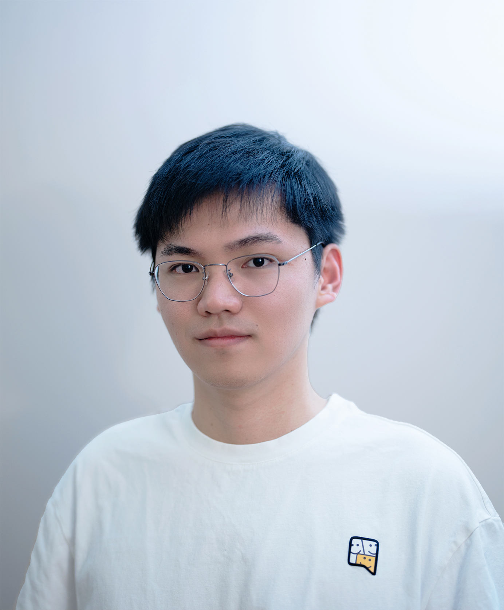

Publications
( show selected / show all by date / show all by topic )
Topics: Generative Model / Neural Rendering / Computational Photography / Others / (*: indicates equal contribution.)

Hi, I am Yifan Jiang (江亦凡), a fourth-year Ph.D student at University of Texas at Austin, VITA Group, supervised by Prof. Zhangyang (Atlas) Wang. Before that I spent one year at Texas A&M University. I received my bachelor's degree
from Huazhong University of Science and Technology,
Wuhan, China.
I've interned at  Adobe (Marc Levoy's team),
Google Research (GCam),
Adobe (Marc Levoy's team),
Google Research (GCam),  Adobe (Applied Research Team), and
Adobe (Applied Research Team), and  Bytedance AI Lab (US CV Lab).
Bytedance AI Lab (US CV Lab).
The central goal of my research is to build intelligent machines that are capable of recreating our visual world. I strive to achieve this by establishing a connection between the visual contents from physical world and from virtual scenes. My research helps people better restore our visual world in the digital format and render artistic effects more easily. Especially, I study three main topics:
News: I'm a recipient of Apple Scholars in AI/ML PhD fellowship 2023.
Topics: Generative Model / Neural Rendering / Computational Photography / Others / (*: indicates equal contribution.)
Click to show [Full Publications]